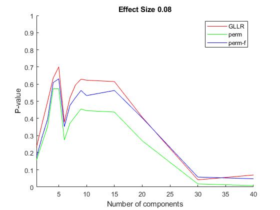
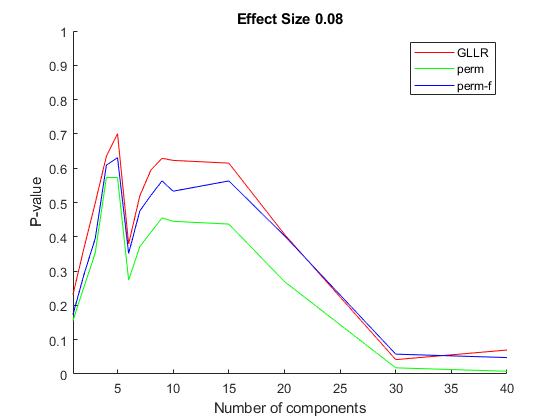

EXAMPLES of Madssen et al. "Statistical validation of multivariate
treatment effects in longitudinal study designs". Submitted to Journal of Chemometrics, 2025. This example generates relative population power curves (see Journal of Chemometrics, 2024, 38 (12): e3596
coded by: Torfinn Støve Madssen (torfinn.s.madssen@ntnu.no) Jose Camacho Paez (josecamacho@ugr.es) last modification: 26/March/2025
This program is free software: you can redistribute it and/or modify it under the terms of the GNU General Public License as published by the Free Software Foundation, either version 3 of the License, or (at your option) any later version.
This program is distributed in the hope that it will be useful, but WITHOUT ANY WARRANTY; without even the implied warranty of MERCHANTABILITY or FITNESS FOR A PARTICULAR PURPOSE. See the GNU General Public License for more details.
You should have received a copy of the GNU General Public License along with this program. If not, see http://www.gnu.org/licenses/.
Contents
General settings
n_sim = 200; iterations = 200;
Treatment effect in real data
effectsize = 0:0.04:0.2; output_dir = './Script_Real/'; nrcomps = 5; center = 'off'; [VarLow5Comp1, VarLow5Comp2] = collect_results(output_dir, effectsize, n_sim, iterations) axis([effectsize(1:2) 0 1]) saveas(gcf,'./Figures/VarRealzoom'); saveas(gcf,'./Figures/VarRealzoom','epsc'); axis([effectsize([1 end]) 0 1]) saveas(gcf,'./Figures/VarReal'); saveas(gcf,'./Figures/VarReal','epsc');
VarLow5Comp1 =
6×5 table
effectsize bootstrap_coverage_treatment GLLR_coverage_treatment perm_coverage_treatment perm_f_coverage_treatment
__________ ____________________________ _______________________ _______________________ _________________________
0 0.005 0.06 0.11 0.065
0.04 0.015 0.085 0.13 0.1
0.08 0.07 0.31 0.37 0.335
0.12 0.36 0.74 0.835 0.8
0.16 0.685 0.965 0.97 0.97
0.2 0.895 1 1 1
VarLow5Comp2 =
6×5 table
effectsize bootstrap_coverage_treatment GLLR_coverage_treatment perm_coverage_treatment perm_f_coverage_treatment
__________ ____________________________ _______________________ _______________________ _________________________
0 0.02 0.075 0.115 0.08
0.04 0.03 0.105 0.15 0.115
0.08 0.09 0.285 0.395 0.36
0.12 0.36 0.675 0.8 0.765
0.16 0.7 0.905 0.975 0.97
0.2 0.915 1 1 1
High variance treatment effect embedded in PC 3
effectsize = 0:0.1:1; output_dir = './Script_Emb/'; nrcomps = 5; expvar = 'high'; center = 'off'; [VarHigh5Comp1, VarHigh5Comp2] = collect_results(output_dir, effectsize, n_sim, iterations) axis([effectsize(1:2) 0 1]) saveas(gcf,'./Figures/VarHigh5zoom'); saveas(gcf,'./Figures/VarHigh5zoom','epsc'); axis([effectsize([1 end]) 0 1]) saveas(gcf,'./Figures/VarHigh5'); saveas(gcf,'./Figures/VarHigh5','epsc');
VarHigh5Comp1 =
11×5 table
effectsize bootstrap_coverage_treatment GLLR_coverage_treatment perm_coverage_treatment perm_f_coverage_treatment
__________ ____________________________ _______________________ _______________________ _________________________
0 0.185 0.035 0.055 0.035
0.1 0.28 0.11 0.075 0.05
0.2 0.435 0.19 0.08 0.075
0.3 0.605 0.4 0.21 0.16
0.4 0.745 0.635 0.375 0.285
0.5 0.79 0.72 0.42 0.35
0.6 0.845 0.845 0.515 0.475
0.7 0.805 0.87 0.535 0.475
0.8 0.835 0.95 0.595 0.565
0.9 0.845 0.97 0.56 0.51
1 0.865 0.98 0.595 0.55
VarHigh5Comp2 =
11×5 table
effectsize bootstrap_coverage_treatment GLLR_coverage_treatment perm_coverage_treatment perm_f_coverage_treatment
__________ ____________________________ _______________________ _______________________ _________________________
0 0.22 0.03 0.07 0.05
0.1 0.255 0.09 0.08 0.045
0.2 0.38 0.12 0.07 0.055
0.3 0.56 0.33 0.19 0.155
0.4 0.725 0.51 0.355 0.285
0.5 0.805 0.665 0.53 0.485
0.6 0.855 0.815 0.65 0.62
0.7 0.85 0.895 0.64 0.6
0.8 0.865 0.945 0.715 0.67
0.9 0.9 0.965 0.725 0.675
1 0.895 0.975 0.745 0.69
P-values in terms of the number of components in real data
load sim_real for iii = 1:2 % 2 replicates for ii = 1:length(effectsize) % Plot p-values figure; ylabel('P-value'); xlabel('Number of components'); title(sprintf('Effect Size %.2f',effectsize(ii))); hold on plot(ncomp_values, pval_GLLR(:,ii,iii), 'red'); plot(ncomp_values, pval_perm1(:,ii,iii), 'green'); plot(ncomp_values, pval_perm3(:,ii,iii), 'blue'); legend('GLLR', 'perm', 'perm-f') axis([1 max(ncomp_values) 0 1]) saveas(gcf,sprintf('./Figures/pvalues_real_%d_%d',iii,ii)); saveas(gcf,sprintf('./Figures/pvalues_real_%d_%d',iii,ii),'epsc'); end end
 
 P-values in terms of the number of components from simulated data with effects in a
specific component
load sim_emb for iii = 1 % 1 replicate for ii = 1:length(effectsize) % Plot p-values figure; ylabel('P-value'); xlabel('Number of components'); title(sprintf('Effect Size %.1f',effectsize(ii))); hold on plot(ncomp_values, pval_GLLR(:,ii,iii), 'red'); plot(ncomp_values, pval_perm1(:,ii,iii), 'green'); plot(ncomp_values, pval_perm3(:,ii,iii), 'blue'); legend('GLLR', 'perm', 'perm-f') axis([1 max(ncomp_values) 0 1]) saveas(gcf,sprintf('./Figures/pvalues_emb_%d_%d',iii,ii)); saveas(gcf,sprintf('./Figures/pvalues_emd_%d_%d',iii,ii),'epsc'); end end